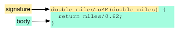

Get Started
Get Dart. Run two apps.
This tutorial gets you ready to begin writing web apps in Dart. Here you will download the Dart software, and use Dart Editor to create and run two small applications.
- Download the Dart software bundle
- What did you get?
- Start Dart Editor
- About Dart applications
- Create a command-line app
- Run a command-line app
- Create a web app
- Run a web app
- About the HTML, CSS, and Dart triumvirate
- About main() and other top-level functions
- About file naming conventions
- Other resources
- What next?
Download the Dart software bundle
Get Dart. The Dart download includes Dart Editor, which you’ll be using throughout this tutorial. (For more options, go to the download page.)
The Dart tools work in recent versions of , , or .
What did you get?
Unzip the file. The resulting directory, your Dart installation directory, contains the following:


Start Dart Editor
Invoke Dart Editor by double-clicking its icon
in your Dart installation directory
 .
.
Dart Editor displays its Welcome Page in a tab in the Editor pane.
Dart Editor includes the following features:
- Send feedback button
- Allows you to share bugs and requests directly with the Dart Editor team as well as the larger Dart team.
- Search field
- Searches every file in your Files view for the entered text. Results for text searches are displayed in a Search view. Within that view, double-click a file to see it in the Editor pane. All occurrences of the search string in the Editor pane are highlighted.
- Run button
- Runs the application associated with the file that is currently selected in the Files view.
- New project button
- Creates a directory and, within it, the files for a new application. Alternatively, you can use the File > New Project menu item or the Create an application button on the Welcome page.
- Files view
- Shows a hierarchical view of your Dart applications and their associated files. Double-click a file in the Files view to see its contents in the Editor pane. If you single-click a file in the Files view, the file is selected, but not necessarily displayed in the Editor pane. You must double-click the file.
- Editor pane
- Provides the basic editing functionality you’d expect, plus features such as Dart code completion, API browsing, and support for refactoring. The first time you use Dart Editor, it shows the Welcome Page in the Editor pane, which provides quick access to Dart resources and some nifty samples. The Welcome Page is also available under the Tools menu.
- Problems pane
- Displays warning and error messages.
About Dart applications
At minimum, a Dart application has
- one Dart source file—a file with the .dart suffix that contains Dart code
- one top-level main() function. This is the entry point for your application.
There are two kinds of Dart applications: command-line applications and web applications. A command-line application is a standalone program that you run in the Dart VM from the command-line in a terminal window. Web applications are hosted on a web page and run in a browser (either directly in a browser that supports Dart or by compiling to JavaScript).
Command-line applications
Dart command-line applications run standalone from the command-line, independent of a web browser. Command-line apps are often used to provide server-side support to a web app, but they can also be scripts.
The Dart VM runs Dart code directly without intermediate compilation.
Conveniently, you can run command-line apps
directly in Dart Editor with the click of the Run button
 .
Alternatively,
use the Dart VM tool
in the
.
Alternatively,
use the Dart VM tool
in the dart-sdk/bin directory in your Dart installation directory.
Web applications
Dart web applications run inside of a browser page. In addition to a Dart file, a web app requires an HTML file to host the app. Often, a web app provides the client-side user interface for a server.
You can run your Dart web app from Dart Editor
by clicking the Run button
 .
By default, Dart Editor invokes Dartium,
which has the Dart VM embedded in it,
and loads your HTML file,
which in turn loads your app.
.
By default, Dart Editor invokes Dartium,
which has the Dart VM embedded in it,
and loads your HTML file,
which in turn loads your app.

If you want to see your web app in a browser
that does not support Dart,
you can compile your Dart code to JavaScript
using the Dart-to-JavaScript compiler,
which is in the dart-sdk/bin directory in your Dart installation directory.
You then load the resulting JavaScript file
into your browser of choice.
Dart Editor provides a convenient menu option for
running web apps as JavaScript.

The rest of this tutorial steps you through creating and running first a command-line application and then a web application.
Create a command-line app
In Dart Editor, choose File > New Project from the menu or click the New Project button . A dialog appears asking you to fill out a simple form.
-
Type
helloworldin the Application Name text field. By convention, application names are lowercase. This name is used for the app’s directory. -
Type or browse to the directory where you want to save the files. By default, Dart Editor creates a new directory named
dartin your home directory. -
Select Console Application from the list.
-
Click Finish.
Dart Editor creates a directory for the application and boilerplate files for a small command-line app. The Files view displays the file hierarchy for the application.
Some of the files and directories in the helloworld application include the following:
- helloworld
- Contains boilerplate files and directories for a simple command-line app.
- pubspec.yaml
- Declares which libraries
your application needs.
The
packagesdirectories contain those libraries. Thepubspec.lockfile specifies the version numbers of the libraries on which the application depends. - bin
- Contains the source files for the application.
The main source file for this example is
main.dart. - main.dart
- Contains the Dart source code for this app.
The Editor pane shows the contents of main.dart.
The program prints
‘Hello, World!’ to the standard output stream
using the print() function,
which is provided by the dart:core library.
The functions and objects defined in the core library
are automatically available to all Dart applications.
Run a command-line app
To run the helloworld app from Dart Editor:
- Select the main.dart file in the Files view.
- Click the Run button
 .
.
Dart Editor opens a new panel, called the Output view, and displays the output of the helloworld app.
Create a web app
Now let’s create a web application. As you did when creating a command-line application, click the New Project button .
-
Type
simplein the application name text field. -
Type or browse to the directory where you want to save the files.
-
Select Uber Simple Web Application from the list.
-
Click Finish.
Dart Editor creates the directory and files needed for a basic web application that prints “Your Dart app is running” in the browser window.
As before, the top-level directory is named after your application.
The Dart source file that contains the main() function is
located in web/main.dart, and the web/index.html file hosts the app.
The main() function in the simple app contains Dart code that puts text on the browser page. This code uses API defined in the dart:html library.
In the next tutorial, you will build a mini app from scratch, creating the Dart source, the HTML source, and the CSS source yourself.
Run a web app
To run the simple app from Dart Editor:
- Select
index.html. - Click the Run button
.
Dart Editor invokes Dartium providing it with the URL for the simple app’s HTML file. Dartium loads the simple app’s HTML file and the embedded app, which prints “Your Dart app is running” in the browser.
Run as JavaScript
You can run Dart web applications in other browsers
by compiling to JavaScript.
Dart Editor provides a convenient menu option for doing so.
Right click on index.html
and select Run as JavaScript from the menu.
Dart Editor compiles the app to JavaScript and invokes your default browser, which runs the app.
About the HTML, CSS and Dart triumvirate
Typically three files—an HTML file, a Dart file, and a CSS file—together implement a Dart web application. Each is written in a different language and each is responsible for a different aspect of the program:
| Language | Purpose |
|---|---|
| HTML | Describes the content of the document (the page elements in the document and the structure) |
| CSS | Governs the appearance of page elements |
| Dart | Implements the interactivity and dynamic behavior of the program |
HTML is a language for describing web pages. Using tags, HTML sets up the initial page structure, puts elements on the page, and embeds any scripts for page interactivity. HTML sets up the initial document tree and specifies element types, classes, and IDs, which allow HTML, CSS, and Dart programs to refer to the same elements.
CSS, which stands for Cascading Style Sheets, describes the appearance of the elements within a document. CSS controls many aspects of formatting: type face, font size, color, background color, borders, margins, and alignment, to name a few.
Dart code is embedded into an HTML file as a script. A Dart program can respond to events such as mouse clicks, manipulate the elements on a web page dynamically, and can save information.
About main() and other top-level functions
Dart lets you define top-level functions, that is, functions that are not encapsulated within a class or object. All apps have at least one top-level function, namely the main() function.
The two apps you’ve seen in this tutorial have other top-level functions. The Hello World example calls print(), a top-level function defined in dart:core. And the simple app calls querySelector().text, a top-level function defined in dart:html.
A function declaration has two parts: a signature and a body.

The signature sets the function name, the data type of its return value, and the number and type of its input arguments.

The body is the code that defines the function’s behavior. It usually appears between curly braces ({code}). If the body is a single expression, then you can skip the braces and use the => shorthand:
double milesToKM(double miles) => miles/0.62;
The milesToKM() function performs a simple arithmetic calculation and returns the result.
This function takes a single argument. Functions can take multiple arguments, in which case the arguments are set apart by commas.
About file naming conventions
When creating an application with Dart Editor, you are asked to provide an application name. By convention, application names, and thus, the related files and directories, are lowercase.
Other resources
- The Dart Editor page provides more information about this tool.
- The Programmer's Guide points you to docs, articles, and other resources to help you as you create, test, and deploy Dart code.
What next?
-
Get the code for all of the Dart tutorials samples. Download the ZIP file, unzip it, and open
dart-tutorials-samples-masterin Dart Editor. -
Go to the next tutorial, Connect Dart & HTML, which steps you through writing a tiny web app from scratch.